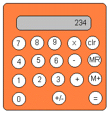

Informal Requirements or Intentions...
1. The application should be graphical, and should have an appearance
similar to the following...

Fig. 8.1
2. Buttons should be "active" and button pushes actually activate calculator functions.
3. An internal accumulator maintains a running total value reflecting the operations that have been made so far during use of the calculator.
4. An operator flag indicates what is the pending operation that will be performed once another operand is entered.
5. The display area shows the latest numeral that has been entered, the memory value that is recalled using MR, or the total value computed so far when the = or M+ keys are pushed.
6. The memory for the calculator contains a value, initially zero. It
is changed by the M+ and MR keys.
Domains ...
Button --> Digit | Arithmetic_Operator | Memory_Operator | Clear | EqualChangeable Properties
Digit --> 0 | 1 | 2 | 3 | 4 | 5 | 6 | 7 | 8 | 9
Numeral --> Digit | Numeral Digit
Arithmetic_Operator --> plus | minus | times | plus_minus
Memory_Operator --> mem_plus | mem_rec
Clear --> clear
Equal --> equal
Mode --> init | cont
Actionaccumulator(N) where N is Numeral op(F) where F is Arithmetic_Operator displayed(D) where D is Numeral memory(M) where M is Numeral mode(C) where C is Mode
Action Animatorpush(B) where B is Button
Animator --> Show_Action | Show_Action AnimatorAction Specifications
Show_Action --> Action Show
Show --> ...
The calculator registers are modelled as a 4-tuple
where
accumulator(a)declare (or express) the current "true" values of these changeable properties.
op(op)
displayed(d)
memory(m)
An action changes the values of these four registers, that is, an action changes the truth or falsity of the changeable properties...
[a,op,d,m] -- Action --> [a',op', d', m']
or
Action < - {preconditions},
deny({old properties}),
{local calculations},
affirm({new properties}).
The specifications are each given in two forms. The first is a more intuitive
summary expression, the second is the formal action specification ...
A fairly straightforward translation of the action clauses gives a Prolog prototype.action_module(calculator) . %[-,-,d1,-] --push(D)--> [-,-,D,-] if mode(init) push(D) < - mode(init), deny([displayed(D1),mode(init)]), affirm([displayed(D),mode(cont)]). %[-,-,D1,-] --push(D)--> [-,-,10*D1+D,-] if mode(cont) push(D) < - mode(cont), deny(displayed(D1)), New = 10*D1 + D, affirm(displayed(New)). %[a,op,d,m] --push(clear)--> [0,nop,0,0] push(clear) < - deny([accumulator(A),op(O),displayed(D),memory(M),mode(X)]), affirm([accumulator(0),op(nop),displayed(0),memory(0),mode(init)]). %[a,op,d,m] --push(mem_rec)--> [a,op,m,m] push(mem_rec) < - memory(M), deny([displayed(D),mode(X)]), affirm([displayed(M),mode(init)]). %[a,op,d,m] --push(plus)--> [op(a,d),plus,d,m] push(plus) < - displayed(D), deny([accumulator(A),op(O),mode(X)]), eval(O,A,D,V), ; use normal arithmetic, i.e., V=O(A,D) affirm([accumulator(V),op(plus),mode(init)]). %[a,op,d,m] --push(minus)--> [op(a,d,minus,d,m] push(minus) lt - displayed(D), deny([accumulator(A),op(O),mode(X)]), eval(O,A,D,V), ; use normal arithmetic, i.e., V=O(A,D) affirm([accumulator(V),op(minus),mode(init)]). %[a,op,d,m] --push(times)--> [op(a,d),times,d,m] push(times) < - displayed(D), deny([accumulator(A),op(O),mode(X)]), eval(O,A,D,V), ; use normal arithmetic, i.e., V=O(A,D) affirm([accumulator(V),op(times),mode(init)]). %[a,op,d,m] --push(equal)--> [a,nop,op(a,d),m] push(equal) < - accumulator(A), deny([op(O),displayed(D),mode(X)]), eval(O,A,D,V), affirm([op(nop),displayed(V),mode(init)]). %[a,op,d,m] --push(mem_plus)--> [a,nop,v,plus(m,v)] where v=op(a,d) push(mem_plus) < - accumulator(A), deny([op(O),displayed(D),memory(M),mode(X)]), eval(O,A,D,V), eval(plus,M,V,V1), affirm([op(nop),displayed(V),memory(V1),mode(init)]). %[a,op,d,m] --push(plus_minus)--> [a,op,-d,m] push(clear) < - deny([displayed(D),mode(X)]), eval(minus,0,D,V), affirm([displayed(V),mode(init)]).
Exercise 8.1 Extend the calculator specification for real arithmetic, implement the specification, and test the implementation.